Em um mundo cada vez mais digitalizado, a convergência entre tecnologia e saúde tem sido uma realidade transformadora. Nesse cenário, a Nutrino, uma empresa israelense de alimentos, emerge como uma luz brilhante na indústria da Foodtech, com um foco inabalável na saúde, principalmente para os diabéticos. A Nutrino não é apenas uma pioneira na Foodtech, mas também uma prova concreta de como a tecnologia pode ser usada para melhorar a qualidade de vida e a saúde de milhões de pessoas em todo o mundo.
O propósito da Nutrino é claro: proporcionar uma abordagem altamente personalizada e específica para a dieta de pessoas que vivem com diabetes. Sua visão audaciosa é transformar a maneira como os diabéticos gerenciam sua condição, tornando-a mais fácil, eficaz e personalizada do que nunca.
A Nutrino utiliza a Foodtech, uma vertente tecnológica que abrange todos os aspectos da cadeia alimentar, desde a produção até a comercialização. Em tempos de pandemia, a Foodtech ganhou notoriedade, revelando seu potencial transformador, e a Nutrino, de forma pioneira, uniu-se a essa revolução.
Uma das conquistas mais notáveis da Nutrino é sua parceria estratégica com a Medtronic, uma gigante da tecnologia médica conhecida por seus monitores de glicose e insulina de ponta. Juntos, eles estão mudando o jogo no atendimento ao diabético, fornecendo uma abordagem altamente personalizada.
Com o auxílio da tecnologia, a Nutrino calcula cuidadosamente a quantidade de carboidratos, os índices de açúcar e outros detalhes cruciais para a gestão da diabetes. Essa colaboração está permitindo que os diabéticos tenham um controle mais preciso sobre sua condição e uma melhor qualidade de vida.
A Nutrino é um exemplo brilhante do que a Foodtech pode alcançar. Essas startups, dedicadas à tecnologia alimentar, estão revolucionando a forma como produzimos, distribuímos e consumimos alimentos. Esse setor promissor cresceu exponencialmente, especialmente durante a pandemia, quando a busca por soluções de alimentação saudável e personalizada se tornou ainda mais urgente.
A Foodtech está possibilitando a criação de alimentos altamente nutritivos e específicos para diferentes necessidades, como dietas para diabéticos, celíacos e outros grupos. Além disso, a automação e a análise de dados estão melhorando a eficiência da produção de alimentos, reduzindo desperdícios e impactos ambientais.
À medida que a Nutrino e outras empresas de Foodtech continuam a inovar, o futuro da alimentação personalizada parece promissor. A tecnologia está permitindo que as pessoas tenham um controle cada vez maior sobre sua dieta, promovendo uma vida mais saudável e equilibrada.
A Nutrino é um farol brilhante nesse cenário, iluminando o caminho para uma revolução na forma como entendemos a relação entre comida, saúde e tecnologia. Com suas parcerias estratégicas e abordagem pioneira, ela está melhorando a qualidade de vida dos diabéticos e inspirando a indústria de Foodtech a continuar avançando rumo a um futuro mais saudável e conectado.